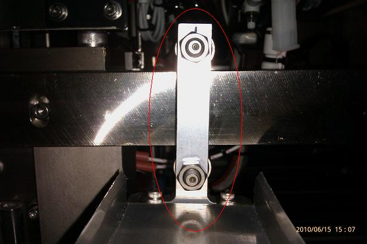
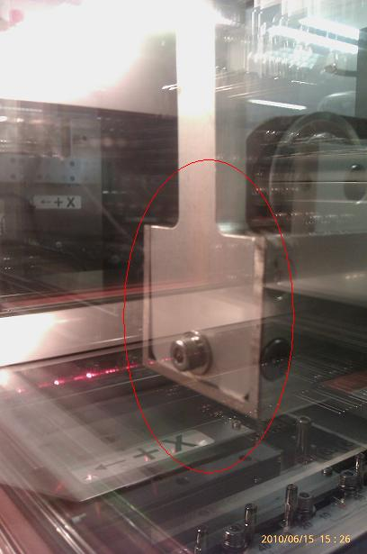
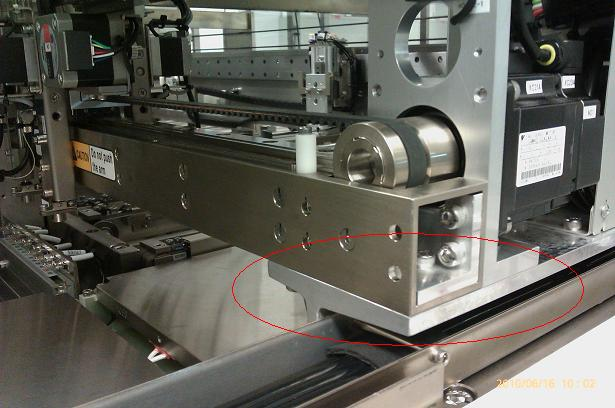
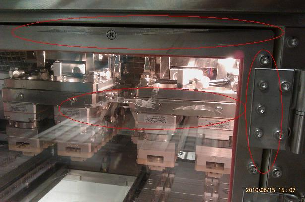

Service History
Subject: NS-8080 Input Arm drifted
Handler Model: NS-8080 (S/N: 181676, 06) STATSChippac
Controller: RC520(S/N: 03-02146)
Date: 15 Jun 2010
Symptom
SCS NS-8080 was complaint of input arm drifted issue.
According the the operator, there was an error message displayed on the main screen and she found that the right side of the index door was open and hit by the input arm.
Model: NS-8080
S/N: 181676
MFG:2009.12
Action
Finding
1) Looking through the MMI event log and SPEL error history wouldn't find any error messages.
2) Input arm main structure frame was out of alignment
3) Right index door found with few scratches and was unable to secure properly(alignment out) and the door hinge area dented.
4) Arm Support 3 bended.
5) Root cause of the issue was due to the right index door unable to secure properly (might cause by frequent open/close of door) and if door was not close properly, the door will swing open after some vibration causing
the input arm hit the door number of times.
6) Simulation found out that during machine running, it took about 2 - 3 sec for the machine to stop after the index door was open and that good enough for the arm to hit the index door.




Action Taken
1) Input arm main structure frame and index door alignment adjusted.
2) Straighten the dented index door hinge are by hammering
2) Alignment check for main structure frame bend found OK.
3) Hand alignment carried out.
4) Running checking carried out.
5) Right chamber and Arm Support 3 need to be replaced as the handler was under warranty.
Question
1) Would it be possible for the machine to stop immediately once the index door opened?
2) Can the index door be improved to prevent it at loose after frequent open/close of the door?
Note: I did experience 2 NS-8080 with the right index door came loose.
Cause
Remarks
This situation is actually in 0191-NS8K.